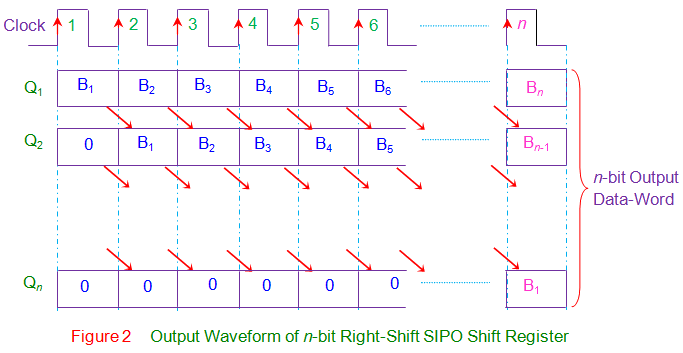

4-बिट सीरियल इन पैरेलल आउट शिफ्ट रजिस्टर्स को डिज़ाइन और सत्यापित करें।
परिचय
सीरियल इन पैरेलल आउट (SIPO) शिफ्ट रजिस्टर में, डेटा को धारावाहिक रूप से रजिस्टर में संग्रहीत किया जाता है, जबकि इसे पैरेलल -फैशन में पुनः प्राप्त किया जाता है। चित्रा 1 क्लॉक पल्स के पॉज़िटिव एज के लिए संवेदनशील एन-बिट सिंक्रोनस SIPO शिफ्ट रजिस्टर दिखाता है। यहाँ डेटा शब्द जिसे संग्रहीत किया जाना है (डेटा इन) को पहले फ्लिप-फ्लॉप (FF 1 के D1) के इनपुट पर क्रमिक रूप से भरा जाता है। यह भी देखा जाता है कि अन्य सभी फ्लिप-फ्लॉप (पहले फ्लिप-फ्लॉप FF 1 को छोड़कर) के इनपुट पूर्ववर्तियों के आउटपुट द्वारा संचालित होते हैं जैसे कि FF 2 का इनपुट FF 1 के आउटपुट द्वारा संचालित होता है। इस तरह के शिफ्ट रजिस्टर में, रजिस्टर के भीतर संग्रहीत डेटा को फ्लिप-फ्लॉप (Q1 से Qn) के व्यक्तिगत आउटपुट पिन्स पर एक पैरेलल-आउटपुट डेटा शब्द (डेटा आउट) के रूप में प्राप्त किया जाता है।
सामान्य तौर पर, प्रारंभिक चरण में सभी फ्लिप-फ्लॉप के क्लियर पिन्स पर उच्च आवेदन करके रजिस्टर सामग्री को मंजूरी दी जाती है। इसके बाद, पहला बिट, इनपुट डेटा शब्द का B1, FF1 के D1 पिन पर भरा जाता है। यह बिट (B1), FF1 में प्रवेश करेगा, संग्रहीत होगा और इस तरह क्लॉक के पहले लीडिंग एज की उपस्थिति पर अपने आउटपुट Q1 पर दिखाई देगा। इसके अलावा दूसरी क्लॉक पल्स में, बिट B1 राइट-शिफ्ट होता है और अपने आउटपुट पिन Q2 में दिखाई देते समय FF2 में संग्रहीत हो जाता है, जबकि एक नया बिट, B2 FF1 में प्रवेश करता है। इसी तरह प्रत्येक क्लॉक पल्स पर रजिस्टर के भीतर का डेटा एक ही बिट से दाईं ओर बढ़ता है जबकि इनपुट शब्द का एक नया बिट रजिस्टर में प्रवेश करता है। इस बीच कोई व्यक्ति व्यक्तिगत फ्लिप-फ्लॉप आउटपुट में पैरेलल-फैशन में रजिस्टर के भीतर संग्रहीत बिट्स को निकाल सकता है।
इसी आधार पर विश्लेषण करते हुए, कोई नोट कर सकता है कि एन-बिट इनपुट डेटा शब्द nth क्लॉक पल्स के राइज़िंग एज पर शिफ्ट रजिस्टर से एन-बिट आउटपुट डेटा शब्द के रूप में प्राप्त किया जाता है। शिफ्ट-रजिस्टर के इस कार्य को तालिका I जैसे संक्षेप में प्रस्तुत किया जा सकता है और संबंधित वेवफॉर्म्स को चित्र 2 में दिया गया है।

राइट-शिफ्ट SIPO शिफ्ट-रजिस्टर में, डेटा बिट्स प्रत्येक क्लॉक पल्स के लिए बाएं से दाएं स्थानांतरित होते हैं। हालाँकि अगर डेटा बिट्स को उसी डिज़ाइन में दाईं से बाईं ओर स्थानांतरित किया जाए, तो किसी को एक लेफ्ट-शिफ्ट SIPO शिफ्ट-रजिस्टर मिलता है जैसा कि चित्र 3 द्वारा दिखाया गया है। फिर भी मूल कार्य सिद्धांत इस तथ्य को छोड़कर समान रहता है कि अब Bn से लेकर B1 तक को Qn से लेकर Q1 तक संग्रहीत किया जाता है यानी nth क्लॉक पल्स पर Q1 = B1, Q2 = B2 … Qn = Bn।